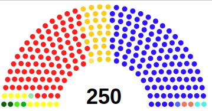
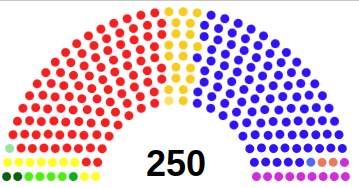

This section is based on aggregated poll data which is updated once per month on Electoral Calculus. The regional seat allocations are the same as that modelled for the 2019 national election to the proposed Senate.
Labour are currently riding high in the polls due to a mixture of factors. Among them are inflationary pressure, a year of intense political upheaval in government, and the public's fatigue of one party being in power for more than a decade. This poll also shows an almost uniform shift in support towards Keir Starmer's Labour platform, where they have the greatest predicted vote share in every region except Scotland and Northern Ireland. This is particularly surprising in regions like the South East, East of England, and the South West which are traditionally Conservative heartlands.
Elsewhere, the Liberal Democrats are continuing to see a nationwide resurgence in support - particularly in the south and east of England. They had reached a low ebb in popular support in the long shadow of the coalition government of the early 2010s. The Reform (formerly Brexit) Party also has substantial support across England, perhaps lapping up some voters who are unsatisfied by the current national administration.
Data for Northern Ireland comes from the November 2022 LucidTalk poll, which was conducted after the upcoming Northern Ireland Assembly election was called for 2023. This poll shows the increasing polarisation in politics in NI - Sinn Féin and the Democratic Unionist Party take all but one of the seats, which is allocated to the neutral Alliance Party. Support for the more moderate UUP and SDLP has been gradually declining over the past two decades, and is put in the spotlight in this poll.
December 2019

November 2018
